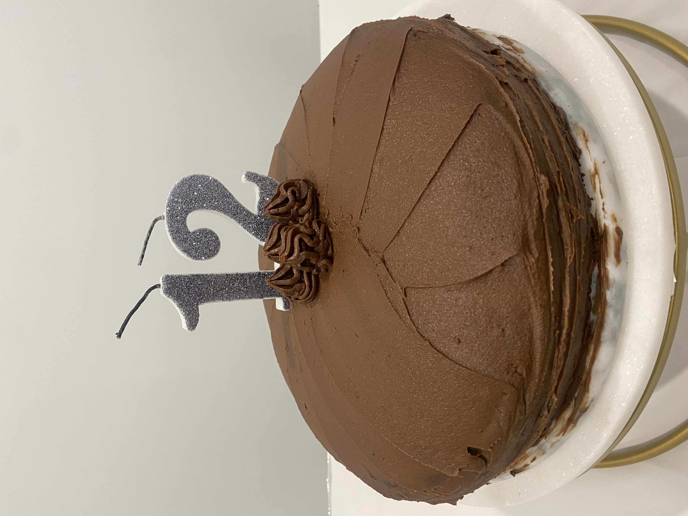

Baking
Whenever I have spare time in the weekends, I love to bake brownies, cakes, cookies and other treats to share with my family.
I'm not the best at it on my own at the moment since I mostly bake with my mum's help, but I am always eager to learn and improve.